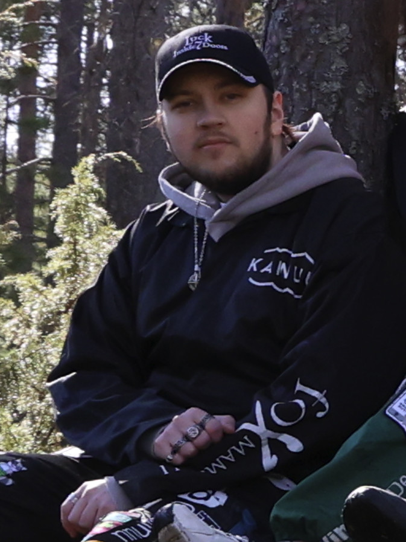

Mika Halonen
Game Programmer Student
Kajaani University of Applied Sciences

Game Programmer Student
Kajaani University of Applied Sciences

Here are some of the projects I've been a part of:
Night of the Living Skurre is a third-person action platformer Unity game for PC. The game relies on comedy as you play pranks on the lumberman. Complete objectives in the cabin to activate traps and watch the lumberman ragdoll.
In this project I was the lead programmer. I worked on the squirrel movement, climbing mechanic, task/quest logic and controller support. I also mainly worked on the technical documentation.
Night of the Living Skurre is released on Steam and itch.io.
Strollmon is a serious game for Android, made using Unreal Engine 5. The main idea of the game is to make your virtual pet happy by taking it on walks. Your steps act as a currency to buy cosmetic outfits for your pet.
In this project I was also a programming lead. Things I worked on included the pet cosmetic logic, pet stats, the project technical documentation and overall helped around with fixing different issues during the project.
Strollmon is available at itch.io and is currently in the middle of being released to Google Play.
Dress to Impress - Aliens is a 2D Unity point and click puzzle game where you do different tasks around your house and prepare yourself to charm the approaching aliens. The game has a couple of minigames and is humoristic with it's references and themes.
This project was our first school project. I was a team lead and worked as a programmer on the inventory logic, some of the minigames, parts of the user interface and implemented new assets in the engine.
Dress to Impress - Aliens is available on itch.io.
Send me an email! • kami.halonen@outlook.com